流程攻略（建議順序）
1. 開局：起始之城／堅定森林
公公獸交代任務，揀拍檔（開新遊戲會隨機或按問答得到亞古獸或加布獸 ⚠️）。出堅定森林打亞古獸、巴魯獸，去毛蟲獸床招毛蟲獸。
主要招募：
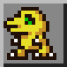
亞古獸、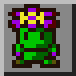
巴魯獸、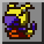
毛蟲獸2. 數碼大橋／西拉海角／熱帶雨林
傍晚去西拉海角搵西拉獸，經海灘去熱帶雨林，修好數碼大橋。雨林招比特獸，阿彌陀森林招人馬獸（診所）。
主要招募：
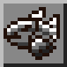
西拉獸、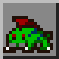
比特獸、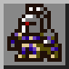
人馬獸、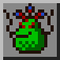
鼻屎獸（之後）3. 齒輪莽原／垃圾山
招艾力獸（照明）、巴達獸、比丘獸（道具店）、大便獸，遇見獅子獸。
主要招募：
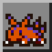
艾力獸、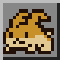
巴達獸、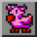
比丘獸、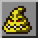
大便獸、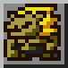
獅子獸4. 鑽頭隧道／熔岩洞
打鑽地獸、清泥，等一日；拍檔成熟期後推開大石，熔岩洞打火焰獸，之後招鑽地獸（尋寶）。
主要招募：
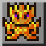
火焰獸、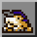
鑽地獸5. 守望山
打低火焰獸後開放。孢子區獨角馬獸（俾回復磁片）、守望台隨機出現豆豆獸、外星人獸事件。
主要招募：
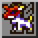
獨角馬獸、豆豆獸、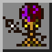
外星人獸6. 繁榮度 6 → 偉大峽谷
同浮球獸傾「隱形橋」。角龍獸小遊戲、奧加獸山賊 ×2（奧加山寨）、巴多拉獸（巴多拉運輸）、貝殼獸（報紙）。
主要招募：
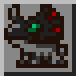
角龍獸、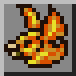
巴多拉獸、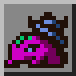
貝殼獸7. 怪蛙濕地／黑暗貴族洋樓／超載幽谷
怪蛙將軍獸（卡片換 功績點／看穿迷霧咒語）、怪蛙獸；超載幽谷墓地猛鬼獸（答 係／係／唔係）；吸血魔獸洋樓（要病毒種拍檔）。
主要招募：
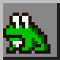
怪蛙獸、猛鬼獸、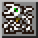
喪屍暴龍獸8. 冰結凍土／寒霜聖殿
毛人獸交換、企鵝獸冰壺、巨鯨獸洞（惡海龍獸＋奧加獸）、雪人獸、加魯魯獸、天使獸。
主要招募：毛人獸、
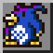
企鵝獸、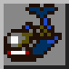
巨鯨獸、雪人獸、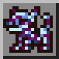
加魯魯獸、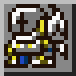
天使獸9. 古代秘境
要先招人馬獸。巨龍獸、隕石獸、巨龍獸大師，亞伯獸鎖匙扣事件。
主要招募：巨龍獸、亞伯獸
10. 朦朧群樹／玩具之城
巨雞獸（04:00–06:59）、加布獸、祖利獸；玩具之城打惡霸熊仔獸。
主要招募：
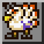
巨雞獸、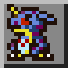
加布獸、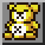
熊仔獸11. 甲蟲島
同海龍獸做朋友攞「湖泊主人的笛子」先去得。比多獸、古加獸升級健身室。
主要招募：
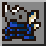
比多獸、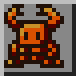
古加獸12. 階乘鎮
坐巨鯨獸渡輪。下水道鼻涕獸、砲彈獸（正午／午夜換更入工廠）、安杜路獸、鋼鐵豆豆獸。
主要招募：鼻涕獸、安杜路獸、砲彈獸、鋼鐵豆豆獸
13. 無限山（最終）
繁榮度 50 以上並打低飛龍獸。6 樓惡魔獸、10 樓機械飛龍獸（DG 維度傷害極高）、11 樓機械暴龍獸、12 樓最終頭目機械邪龍獸。
主要招募：
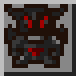
惡魔獸、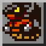
機械飛龍獸、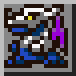
機械暴龍獸、蛋蛋獸（通關後）全部地區列表
- 起始之城（上） File City Top
- 起始之城（下） File City Bottom
- 起始之城 File City
- 堅定森林 Native Forest
- 西拉海角 Coela Point
- 龍眼湖 Dragon Eye Lake
- 鑽頭隧道入口 Drill Tunnel Entrance
- 數碼大橋 Digimon Bridge
- 熱帶雨林 Tropical Jungle
- 紅樹林區 Mangrove Region
- 阿彌陀森林 Amida Forest
- 守望山山路 Path Thru Mt. Panorama
- 守望台 Mt. Panorama Plains
- 守望山 Mt. Panorama
- 守望緩坡 Foot of Mt. Panorama
- 鑽頭隧道 Drill Tunnel
- 鑽頭隧道二層 Drill Tunnel 2nd Floor
- 鑽地獸居住區 Residential Area
- 地下池 Underground Pond
- 熔岩洞 Lava Cave
- 超載幽谷 Overdell
- 超載幽谷墓地 Overdell Cemetery
- 偉大峽谷入口 Great Canyon Entrance
- 偉大峽谷上層 Great Canyon Top Area
- 偉大渡橋 Great Canyon Bridge
- 山寨入口 Fortress Entrance
- 偉大峽谷下層 Great Canyon Bot. Area
- 奧加山寨 Ogre Fortress
- 角龍商店 Monochrome Shop
- 黑暗貴族洋樓 Grey Lord's Mansion
- 洋樓地庫 Mansion Basement
- 地下實驗室 Underground Lab
- 齒輪莽原 Gear Savanna
- 古代秘境入口 Ancient Dino Region
- 時靜域 Ancient Glacial Region
- 時急域 Ancient Speedy Region
- 冰結凍土 Freezeland
- 寒霜聖殿 Ice Sanctuary
- 甲蟲島 Beetle Land
- 綠色健身室 Green Gym
- 獅子獸祖先洞窟 Leomon's Ancestor Cave
- 朦朧群樹 Misty Trees
- 偉大峽谷（巴多拉獸鳥巢） Great Canyon
- 怪蛙濕地 Geko Swamp
- 巨音鄉 Volume Villa
- 秘密海岸洞 Secret Beach Cave
- 玩具之城 Toy Town
- 公仔裝屋 Costume House
- 機械人屋 Robot House
- 玩具洋房 Toy Mansion
- 階乘鎮 Factorial Town
- 下水道 Sewer
- 垃圾山 Trash Mountain
- 無限山 Mt. Infinity
- 公公獸屋企 Jijimon's House
- 巴多拉運輸 Birdra Transport
- 競技場大堂 Arena Lobby
- 尋寶店 Treasure Hunt
- 道具倉庫（銀行） Item Keeper
- 半人馬診所 Centar Clinic
- 餐廳 Restaurant
- 道具店 Item Shop
- 秘密商店 Secret Shop
- 裏次元 Back Dimension
- 守望山孢子區 Mt. Panorama Spore Area
- 數碼冰壺場 Digimon Curling
📎 參考：HeroesAndCons – Recruitment Guide（GameFAQs 招募指南） ｜ Grindosaur – Areas（地區）